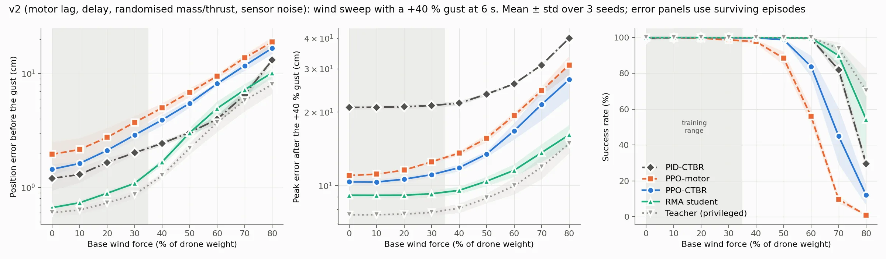
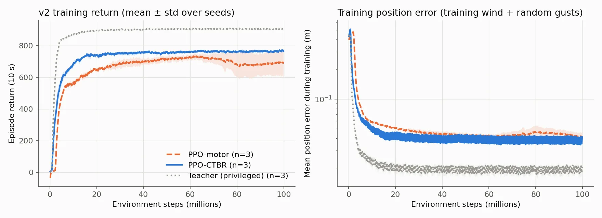
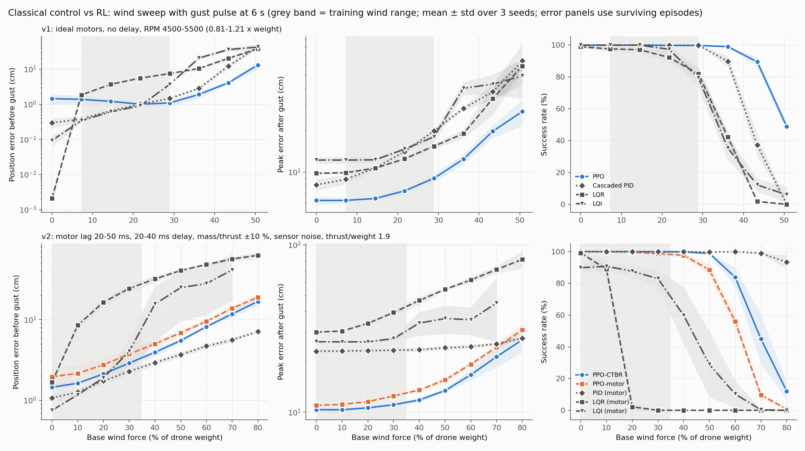
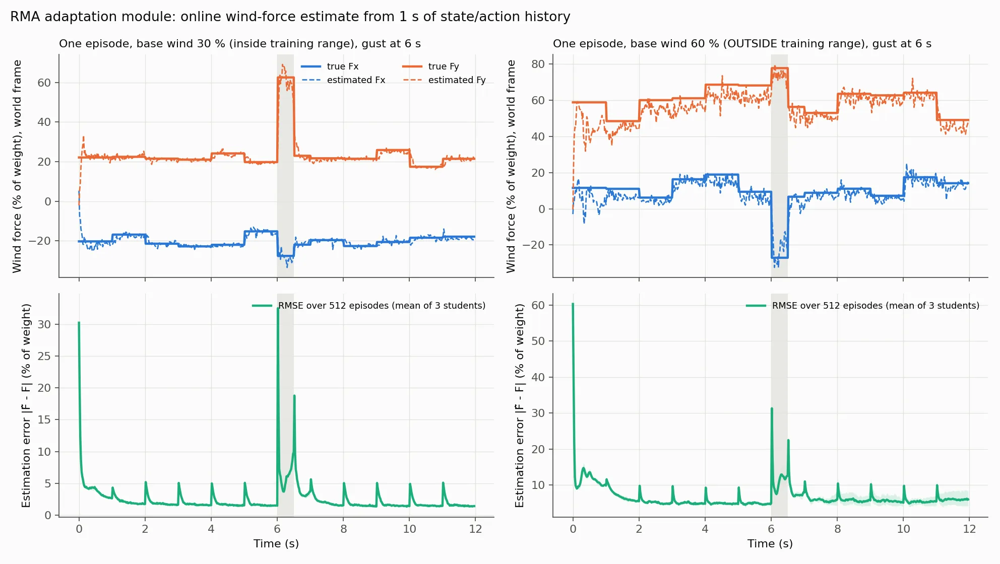

无人机抗风悬停：PID、LQR 与强化学习
在阵风里把一架 Crazyflie 级四旋翼稳在一个点上，该用手调的串级 PID、LQR，还是强化学习策略？我把 8 种控制器放进同一套 Isaac Lab 环境、用同一套评估协议比较。先在理想仿真里比一次，再换成有电机滞后、指令延迟、参数随机和传感器噪声的仿真重比。RL 输的地方也照实列出来。
- 时间
- 2025–2026
- 技术栈
- Isaac Sim 4.5 · Isaac Lab 2.1 · PyTorch · PID · LQR/LQI · PPO · TD3 · DQN · RMA
- 环境
- Crazyflie 2.x（28.2 g），1024 架 GPU 并行；v1 理想电机，v2 加入电机滞后、20–40 ms 延迟、±10% 质量和推力、传感器噪声，推重比 1.9
- 我做的
- 两套风扰环境；PID、LQR、LQI 的实现和 CEM 自动调参；PPO、TD3、DQN 训练；CTBR 动作接口；RMA 教师–学生训练；统一评估和录像
- 结果
- v2 训练风力范围内，RMA 自适应策略三项指标都最好：稳态误差 0.90 cm、阵风峰值 9.2 cm、恢复 0.84 s，PID 分别是 1.66 cm、21.0 cm、1.58 s。但到 80% 机重的强风，PID 成功率 93%，RMA 54%，普通 PPO 12%。
- 评估
- 每个控制器 3 个种子（RL 是训练种子，PID/LQR/LQI 是独立调参种子）× 512 个回合，固定评估种子；外加 0–80% 机重的风力扫描
方法一览
| 方法 | 怎么工作 | 输入 → 输出 | 需要调的东西 |
|---|---|---|---|
| 串级 PID （比例–积分–微分，多环嵌套） | 位置 PID 算出期望推力向量（限制最大倾角）→ 倾角优先的姿态 P 环 → 角速度 P 环 → 混控分配到四个电机。PX4 和 Crazyflie 固件用的就是这种结构 | 位置、速度、姿态、陀螺仪 → 4 个电机指令（或 CTBR） | 8 个增益，用 CEM 自动调 |
| LQR （线性二次型调节器，Kalman 1960） | 在悬停点把动力学线性化成 12 状态的小角度模型，按 50 Hz 离散化后解 Riccati 方程，得到一个固定的状态反馈增益矩阵；位置误差做限幅防饱和 | 12 维状态 → 总推力 + 3 个力矩 → 电机 | Q/R 权重（按 Bryson 法则设 10 个最大允许值）+ 限幅 |
| LQI （带积分的 LQR） | 在 LQR 状态里再加 3 维位置误差积分，用来消除恒定扰动造成的稳态偏差；条件积分防积分饱和 | 状态 + 位置误差积分 → 推力 + 力矩 | LQR 的参数 + 2 个积分权重 |
| PPO （近端策略优化，Schulman 2017） | 同策略 actor-critic：每轮用当前策略采样，更新时裁剪新旧策略的比值，防止一步改得太多 | 18 维（v1）/ 26 维（v2）观测 → 4 维连续动作 | 1024 环境 × 32 步，裁剪 0.2，γ 0.99，网络 256-128-64 |
| TD3 （双延迟 DDPG，Fujimoto 2018） | 异策略、确定性策略：用两个 Q 网络取较小值抑制高估，目标动作加噪声平滑，actor 隔一步才更新一次 | 同上 → 4 维连续动作 | 200 万回放池，batch 4096，网络 256-256 |
| DQN （深度 Q 网络，Mnih 2015；这里用 Double DQN + 3 步回报） | 只能输出离散动作：每个电机三档转速，共 81 种组合，学每种组合的 Q 值 | 同上 → 81 选 1 | 学习率 1e-4，目标网络软更新 0.001 |
| CTBR 动作接口 （Collective Thrust + Body Rates） | 策略不直接给电机指令，而是给总推力和三个机体角速度设定值，再由机上 100 Hz 的角速度 P 环和混控转成电机指令。真机飞控普遍接受这种指令 | [推力, ωx, ωy, ωz] → 电机 | 角速度增益 20/20/10 s⁻¹，最大角速度 4/4/2 rad/s |
| RMA 教师 （Rapid Motor Adaptation，Kumar 2021） | PPO-CTBR 策略额外看到 7 维“特权信息”：机体系风力、质量、推力系数、电机时间常数、延迟 | 观测 + 真实环境参数 → CTBR | 同 PPO，1 亿步 |
| RMA 学生 | 冻结教师；另训练一个适配模块，只用过去 1 秒（50 步）的观测和动作去估计那 7 维特权信息，估计值喂给教师。按 DAgger 方式用学生自己飞出来的数据做回归 | 50 × 26 维历史 → 估计参数 → 教师 → CTBR | MLP 1300-256-128-7，3000 万步 |
CEM（交叉熵方法）是 PID/LQR/LQI 的调参方式：每轮随机采样一批参数，各在 1024 个并行回合里飞一遍，取最好的一部分更新采样分布。调参用种子 11–13，从不使用评估种子，保证和 RL 的比较是公平的。
两套仿真环境
共用部分：Crazyflie 2.x（28.2 g，重力 0.277 N），目标点 (0, 0, 1) m，起点随机偏离 ±0.2 m、偏航随机；物理 100 Hz、控制 50 Hz。风是世界坐标系下的水平力，每秒随机波动 ±20%，训练时还会随机出现阵风脉冲。奖励在 v1 和 v2 里相同：靠近目标加分，扣掉速度和角速度的平方项；v2 再扣一项动作变化量，抑制抖动。
| v1 理想仿真 | v2 接近真实 | |
|---|---|---|
| 电机 | 4500–5500 RPM，瞬时响应；总推力 0.81–1.21 倍机重 | 推重比 1.9；一阶滞后，时间常数随机 20–50 ms |
| 指令延迟 | 无 | 1–2 个控制周期（20–40 ms） |
| 参数随机化 | 无 | 质量/惯量、推力系数各 ×U[0.9, 1.1] |
| 传感器噪声 | 无 | 位置 5 mm，速度 2 cm/s，姿态 0.01 rad，陀螺 0.05 rad/s |
| 观测 | 18 维机体系状态 | 18 维 + 最近 2 步动作 = 26 维 |
| 动作 | 4 个电机指令 | 4 个电机指令，或 CTBR |
| 训练风力 | 0.02–0.08 N（机重 7–29%）+ 阵风 0.03–0.10 N | 0–35% 机重 + 阵风 10–40% |
| 评估阵风 | +0.10 N（36%） | +40% |
状态全部用机体坐标系下的量：位置误差、机体系重力方向、线速度、角速度等。姿态不用欧拉角：偏航随机时欧拉角在 ±π 处跳变，试训中 PPO 坠机率 15%；换成机体系重力方向后降到 0.2%。
评估协议：每回合 12 秒，基础风在训练范围内随机取大小和方向，第 6 秒从随机方向加 0.5 秒阵风；512 个回合，评估种子 1000。位置误差是 2–6 秒内与目标点的平均真实距离；阵风峰值是阵风后的最大误差；恢复时间从阵风开始算，到误差回到 5 cm 内并保持 0.5 秒；成功指 12 秒内没坠机、且最后 2 秒误差小于 10 cm。
v1：理想仿真
| 控制器 | 位置误差 (cm) | 阵风峰值 (cm) | 恢复 (s) | 成功 | 坠机 |
|---|---|---|---|---|---|
| PPO | 1.13 ± 0.24 | 7.1 ± 0.3 | 0.54 ± 0.04 | 99.7% | 0.3% |
| TD3 | 1.84 ± 0.24 | 7.5 ± 0.2 | 0.62 ± 0.04 | 100% | 0% |
| DQN | 0.80 ± 0.14 | 8.4 ± 0.1 | 0.63 ± 0.01 | 100% | 0% |
| 串级 PID | 0.81 ± 0.05 | 13.2 ± 0.3 | 1.10 ± 0.02 | 99.7% | 0.3% |
| LQR | 4.65 ± 0.07 | 11.6 ± 0.1 | 1.22 ± 0.01 | 94.3% | 5.5% |
| LQI | 1.06 ± 0.04 | 13.7 ± 0.8 | 1.35 ± 0.23 | 96.5% | 2.9% |
理想条件下，RL 的阵风峰值和恢复时间大约是 PID 的一半；稳态误差上 PID 和 DQN 打平，PPO 反而略差。DQN 稳态误差小，是因为它的三档开关式控制训好后在目标点附近做极小幅度的来回切换。
| 基础风 | PPO | TD3 | DQN | PID | LQR | LQI |
|---|---|---|---|---|---|---|
| 0.12 N（43% 机重） | 89.5% | 79.8% | 80.5% | 37.2% | 1.8% | 12.2% |
| 0.14 N（51% 机重） | 48.8% | 42.8% | 10.4% | 0.1% | 0% | 6.1% |
v1 的电机推力最多只有机重的 1.21 倍，这么大的风下所有控制器都在推力饱和边缘。RL 训练时见过大量阵风造成的饱和，学会了用满执行器的余量，所以掉得最慢。这个优势到了推力余量更大的 v2 就不成立了。


v2：接近真实的仿真
- RMA 教师
- 7.7
- RMA 学生
- 9.2
- PPO-CTBR
- 10.6
- PPO-电机
- 11.6
- TD3-CTBR
- 19.7
- PID-CTBR
- 21.0
- PID-电机
- 23.4
- LQI
- 27.0
- LQR
- 33.5
| 控制器 | 位置误差 (cm) | 阵风峰值 (cm) | 恢复 (s) | 成功 | 坠机 |
|---|---|---|---|---|---|
| 串级 PID（CTBR，机上角速度环） | 1.66 ± 0.17 | 21.0 ± 0.4 | 1.58 ± 0.04 | 99.9% | 0.1% |
| 串级 PID（电机指令） | 1.73 ± 0.17 | 23.4 ± 0.6 | 1.94 ± 0.19 | 100% | 0% |
| LQR（电机指令） | 14.72 ± 1.61 | 33.5 ± 0.5 | 1.81 ± 0.30 | 35.3% | 0.8% |
| LQI（电机指令） | 2.27 ± 0.57 | 27.0 ± 0.3 | 1.76 ± 0.05 | 84.8% | 14.4% |
| PPO（电机指令） | 2.83 ± 0.54 | 11.6 ± 0.2 | 1.35 ± 0.06 | 99.5% | 0.5% |
| PPO（CTBR） | 2.15 ± 0.13 | 10.6 ± 0.3 | 1.09 ± 0.04 | 100% | 0% |
| TD3（CTBR） | 9.90 ± 1.40 | 19.7 ± 0.6 | 1.91 ± 0.21¹ | 54.4% | 0% |
| RMA 学生（CTBR，在线估计风力） | 0.90 ± 0.05 | 9.2 ± 0.2 | 0.84 ± 0.06 | 100% | 0% |
| RMA 教师（看得到真实风力，上界） | 0.74 ± 0.06 | 7.7 ± 0.1 | 0.80 ± 0.03 | 100% | 0% |
¹ TD3 只有 16.5% 的回合能回到 5 cm 以内，均值只算这些回合。它在范围内不坠机，但悬停时一直偏离约 10 cm（各种子成功率 36–70%）。DQN 的三档离散动作表达不了 v2 更宽的推力范围和 CTBR 设定值，v2 没有重训 DQN。
| 控制器 | 40% | 50% | 60% | 70% | 80% |
|---|---|---|---|---|---|
| PID-CTBR | 99.9% | 99.9% | 99.3% | 82.0% | 29.6% |
| PID-电机 | 100% | 99.7% | 99.9% | 99.0% | 93.4% |
| LQR | 0% | 0% | 0% | 0% | 0% |
| LQI | 59.8% | 28.8% | 10.2% | 0.3% | 0% |
| PPO-电机 | 97.7% | 88.5% | 56.0% | 9.6% | 0.8% |
| PPO-CTBR | 99.8% | 98.8% | 83.9% | 45.0% | 12.0% |
| TD3-CTBR | 0% | 0% | 0% | 0% | 0% |
| RMA 学生 | 100% | 99.9% | 99.7% | 89.9% | 54.3% |
| RMA 教师（上界） | 100% | 100% | 100% | 93.9% | 70.2% |
LQR 在 40–60% 风力下其实很少坠机，成功率是 0 是因为没有积分项，稳态偏差超过了 10 cm 的成功阈值。




PID、LQR、RL 对比


为什么用串级 PID 做基线
真机上就是它在飞：PX4 和 Crazyflie 固件都用位置 → 姿态 → 角速度三级 PID，所以“RL 能不能比 PID 好”是工程上真正要回答的问题。调好之后它也是个强基线：用 CEM 调 8 个增益，3 个独立调参种子的结果相差只有几个百分点；v1 里稳态误差 0.81 cm，与最好的 RL 持平；v2 里强风下最稳。
加上 LQR 之后怎样
- 赢在模型准确时的阵风响应。v1 模型完美、无延迟，LQR 阵风峰值比 PID 低（11.6 vs 13.2 cm）：全状态反馈同时用速度和姿态，对扰动反应更快。加了积分的 LQI 稳态误差和 PID 接近（1.06 vs 0.81 cm）。
- 输在恒定扰动。纯 LQR 没有积分项，恒定风和 v2 里随机的质量、推力都会留下固定偏差：v1 4.65 cm，v2 14.7 cm，PID 是 0.81 / 1.73 cm。LQI 能消掉（1.06 / 2.27 cm）。
- 输在饱和。线性控制律不知道电机有上限。不做误差限幅时，LQR/LQI 在初始偏差和阵风后都会坠机；加了限幅和条件积分，v1 里仍有 3–6% 坠机，43% 风力下成功率 2–12%，有倾角限制的 PID 是 37%。
- 输在模型误差和延迟。LQR 的模型里没有电机滞后和指令延迟。到了 v2，LQI 的余量基本耗尽：成功率 84.8%，坠机 14.4%（PID 100%）；超出训练范围后很快崩掉，60% 风力只剩 10%，PID 99.9%。PID 逐环低增益的结构对 20–90 ms 的未建模滞后容忍得多。
结论：在这个问题上，LQR 只在理想模型里比 PID 好，换成接近真实的执行器就不如 PID。
RL 相比 PID 和 LQR 的优缺点
- 优点：抗阵风好得多。v2 里 RMA 阵风峰值 9.2 cm，PID 21.0 cm，LQI 27.0 cm；恢复 0.84 s，PID 1.58 s，LQI 1.76 s。v1 里 PPO 的峰值和恢复时间都约为 PID 的一半（7.1 vs 13.2 cm，0.54 vs 1.10 s）。
- 优点：会用满执行器。v1 推力余量很小时，43% 风力下 PPO 成功率 89.5%，PID 37.2%。
- 优点：加上 RMA 后能在线辨识风力，稳态误差也最好（v2 0.90 cm，PID 1.66 cm）。
- 缺点：只在训练范围附近好用。v2 风力超过 60% 机重后，PID-电机仍有 93–99% 成功率，PPO 掉到 1–12%，RMA 54%。积分器能一直累积去抵消任意大小的恒定风，策略网络只在见过的范围里可靠。
- 缺点：成本和脆弱性。每个种子 1 亿步仿真（一张 GPU 约 1 小时），还要设计观测、动作接口、随机化和奖励；同一套 TD3 超参数在 v1 表现很好，到 v2 就失效了。PID 是 8 个可解释的增益，约 10 分钟调完，稳定裕度也有成熟的分析方法。
动作接口：电机指令还是 CTBR
同样是 PPO、同样的训练预算，只把输出从 4 个电机指令换成“总推力 + 3 个机体角速度”，由机上角速度环去跟踪：
| 指标 | 电机指令 | CTBR | 变化 |
|---|---|---|---|
| 稳态位置误差 | 2.83 cm | 2.15 cm | −24% |
| 阵风峰值 | 11.6 cm | 10.6 cm | −9% |
| 恢复时间 | 1.35 s | 1.09 s | −19% |
| 70% 风力成功率 | 9.6% | 45.0% | ×4.7 |
快速的角速度稳定交给了机上 100 Hz 的环，策略只需决定“往哪倾、推多大”，学习问题更简单；训练曲线上 CTBR 的回报也更高、种子间更一致。真机飞控本来就接受 CTBR 指令，所以它也更容易部署。PID 则相反：用电机指令时在强风下更稳（80% 风力成功率 93% vs 30%）。
RMA：在线估计风力
普通 PPO 只能看到当前状态，不知道此刻风有多大，只能学一个对所有风力都凑合的策略。RMA 分两步：先训练一个能直接看到真实风力和机体参数的教师；再训练适配模块，只看过去 1 秒的状态和自己发出的动作——“推力给了这么多，飞机却往那边漂”——去反推这些参数，交给教师使用。
| 指标 | PPO-CTBR | RMA 学生 | RMA 教师（上界） |
|---|---|---|---|
| 稳态位置误差 | 2.15 cm | 0.90 cm（−58%） | 0.74 cm |
| 阵风峰值 | 10.6 cm | 9.2 cm（−13%） | 7.7 cm |
| 恢复时间 | 1.09 s | 0.84 s（−23%） | 0.80 s |
| 80% 风力成功率 | 12.0% | 54.3% | 70.2% |
| 情况 | RMSE | 说明 |
|---|---|---|
| 稳定风 30%（训练范围内） | 2.0% | 估计与真实 x/y 风力相关系数 0.994 |
| 稳定风 60%（训练范围外） | 5.2% | 整体偏低约 2.7% |
| 0.5 秒阵风期间 | 9–13% | 1 秒的历史窗口对阶跃变化滞后约 0.1–0.2 秒 |


估计得准，说明 RMA 的提升确实来自“知道了风多大”。学生和教师在三项指标上相差 5–19%，剩下的主要是阵风刚来时的估计滞后。
哪些结论成立
| 说法 | 成立吗 | 依据 |
|---|---|---|
| RL 抗阵风比 PID/LQR 好（峰值、恢复） | 成立，v1 和 v2 都是 | v1 PPO 7.1 vs PID 13.2 cm；v2 RMA 9.2 vs 21.0 cm，0.84 vs 1.58 s |
| RL 稳态悬停精度最好 | 只有加了自适应才成立 | v2 RMA 0.90 cm 最好；普通 PPO 比 PID 差（2.15 vs 1.66 cm）；v1 PID ≈ DQN < PPO |
| RL 比 PID 更能扛强风 | v2 不成立；v1 成立（推力饱和场景） | v2 80% 风力：PID-电机 93%，RMA 54%，PPO 12%；v1 43%：PPO 89.5%，PID 37% |
| RMA 比普通 RL 好 | 成立 | 稳态 −58%，峰值 −13%，恢复 −23%；80% 风力 54.3% vs 12.0% |
| 适配模块真的在估计风 | 成立 | 范围内 RMSE 2% 机重，相关系数 0.994 |
| CTBR 是更好的 RL 动作接口 | 成立（PPO） | 稳态 −24%，恢复 −19%，70% 风力 45% vs 9.6% |
| LQR 比 PID 好 | 不成立 | 只在理想 v1 里阵风峰值更低；稳态偏差、饱和、延迟鲁棒性都更差 |
| TD3 有竞争力 | v1 成立，v2 不成立 | v1 成功率 100%、峰值 7.5 cm；v2 偏差 9.9 cm、成功率 54%，≥40% 风力为 0 |
训练与调参
| v1 | v2 | |
|---|---|---|
| RL | PPO / TD3 / DQN，各 3 种子 × 5000 万步 | PPO-电机、PPO-CTBR、RMA 教师、TD3-CTBR，各 3 种子 × 1 亿步；RMA 学生每个教师 3000 万步 |
| PID / LQR / LQI | CEM，每轮 1024 个并行回合（PID 20 轮，LQR/LQI 30 轮），调参种子 11–13，8 秒回合、第 4 秒加阵风；从不使用评估种子 | |
DQN 最难训。照搬 TD3 的更新频率和学习率，约 800 万步时 Q 值发散；降低更新比例、加 3 步回报后，1100 万步左右又崩了。最后用 Double DQN、学习率 1e-4、目标网络软更新系数 0.001，三个种子都稳定训到 5000 万步。
让 LQR 的比较公平。一开始直接在原始 Q/R 上解 Riccati 方程，权重范围一大就数值失败，改成在 Bryson 归一化坐标下求解；初值从物理上合理的 Bryson 估计出发，而不是参数区间中点；像 PID 的倾角限制一样给位置误差加可调的限幅；LQI 用条件积分。每一步去掉的都是实现问题造成的坠机，剩下的差距才算 LQR 本身的。
局限
- 只在仿真里。风被简化成作用在质心的水平力，没有桨叶气动、地面效应和风对姿态的力矩；还没上实机。
- DQN 没有参加 v2 对比。三档离散动作表达不了 v2 更宽的推力范围，需要重新设计动作集。
- RL 的强风结论依赖训练分布。训练风力扩大到 0–80% 后 RL 在强风下会怎样，这次没有测。
- 没有和自适应经典控制比。扰动观测器（DOB）、增量非线性动态逆（INDI）这类方法也能在线补偿风力，可能是 RMA 更直接的对手。